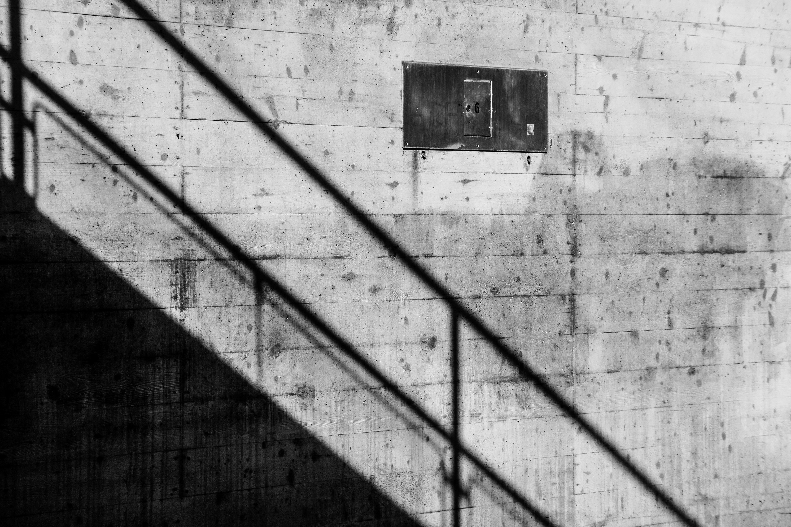

KRISTALL
-SPIEGELGLAS

ist einer der vollkommensten Baustoffe moderner, anspruchsvollster Architektur
und Ausdruck
eines
kultivierten Lebensstils. Die Wohnung schiebt sich hinaus in
den Garten und Gärten dringen mit
blühenden Pflanzen-Räumen ins Haus. Das
Fenster hat seinen ursprünglichen Sinn, nur das
Tageslicht ins Haus
zu lassen,
längst erweitert. Es ist zur kristallklaren Wandfläche geworden, die nicht mehr
trennt,
sondern
verbindet, den Lebensraum erweitert und vom sicheren Platz im
Haus teilnehmen läßt am Werden
und
Vergehen der Natur.
Die Wandlung und Erweiterung der Fenster-Räume verdanken wir dem Spiegel-
glas. Große Scheiben,
erstaunlich haltbar und bruchfest, so durchsichtig und
optisch einwandfrei, als wären sie
garnicht da, sind
gleichzeitig ideal
isolierende Trennwände gegen Kälte und Geräusch: